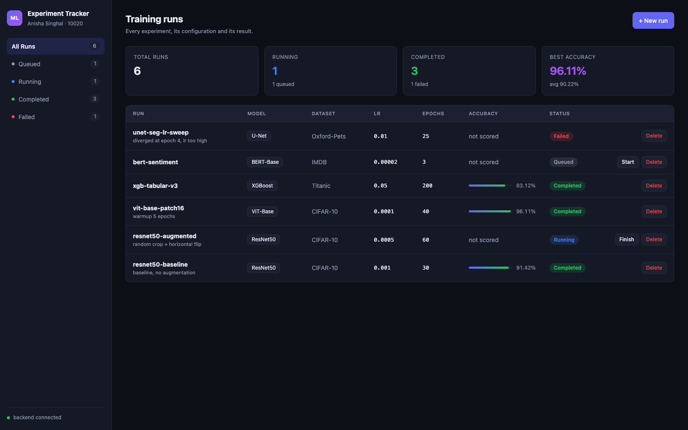
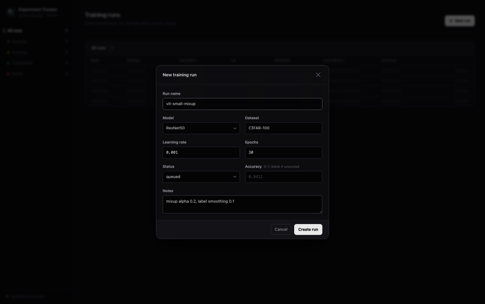
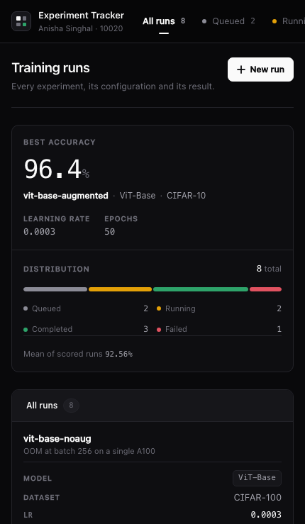
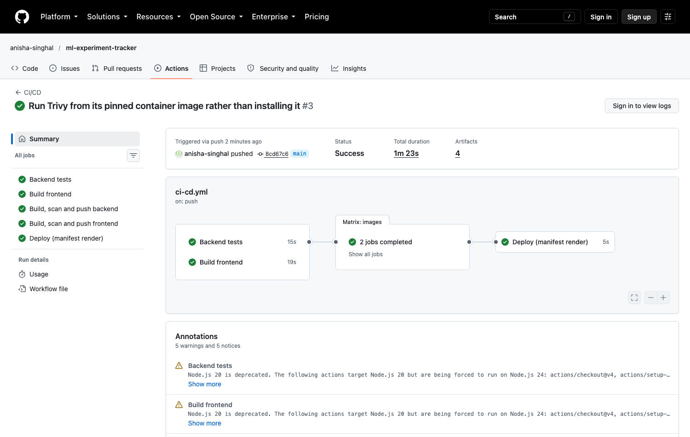
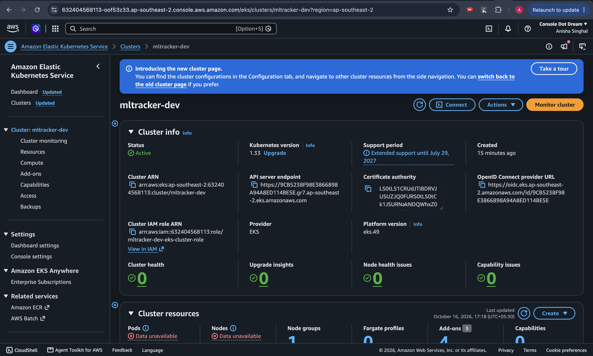
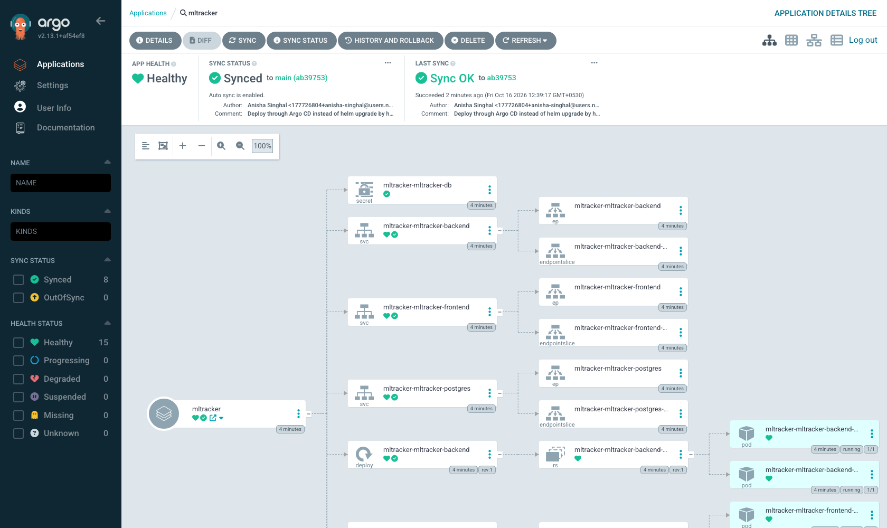
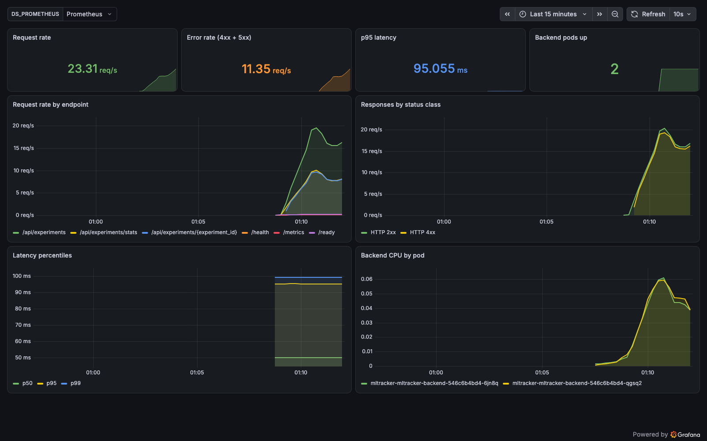

A tracker for machine-learning training runs, taken from a laptop to a monitored, GitOps-managed Kubernetes cluster — with the infrastructure provisioned on AWS by Terraform.
Enrollment 10020 · github.com/anisha-singhal/ml-experiment-tracker

Name, model, dataset, learning rate, epochs, status and accuracy — filterable by status, with totals, the best run and the mean.
queued → running → completed, or failed. Each transition is an API call the dashboard makes.
A queued run has no score yet, which is a different thing from having scored 0.0. The distinction holds in the schema, the API and the UI.


The image is loaded into the runner's Docker daemon, scanned there, and pushed only if the gate passes. A vulnerable image never reaches the registry.
Never :latest. Every running pod traces back to the exact commit that built it, and a rollback is a tag change, not a rebuild.
Tests and the frontend build run in parallel; both must pass before any image is built.

All three in starlette 0.41.3 — not a direct dependency; FastAPI pins it. CVE-2026-48818: StaticFiles did not reject Windows UNC paths, so a crafted request could make the server open a share on an attacker's host. Fixed by upgrading FastAPI 0.115 → 0.143.
None of it this project's code — all inherited from the nginx 1.27-alpine base image, including 2 CRITICAL in libssl. A pinned base tag is rebuilt less often than Alpine ships fixes. Fixed with 1.29-alpine plus apk upgrade at build time.
The backend still reports 44 HIGH with no upstream fix. Failing every build on a CVE nobody has patched yet blocks delivery for a reason this repository cannot act on — so the gate fails only on what can be fixed, and the rest is tracked in docs/trivy-output.txt rather than hidden.
Every call returned explicit deny in a service control policy — the account is pinned to one region and I was calling Mumbai. The error named the service, never the region.


Nobody runs helm upgrade by hand. The synced revision is the Git commit it rendered.
Changing what runs means editing values-gitops.yaml and pushing.
Scaling the frontend to 1 by hand put it back to 2 — the cluster cannot quietly diverge from Git.
A Helm pre-install hook runs before the database exists, so it timed out every time.
The scrape target is declared in the chart, so both backend pods are found as they come and go.
Version-controlled, not clicked together in the UI and lost on the next reinstall.
404s and 422s mixed into the traffic. A dashboard that only ever shows 200s proves nothing about its error panels.

A Helm hook orders against the release; an initContainer orders against the pod. Only one of them runs after the database exists.
The first Trivy run broke both builds. Scanning after the push would have looked identical and protected nothing.
Nothing here imports starlette or libssl. Both shipped inside the images anyway.
A request carries a region, a principal and a resource. The message rarely says which one failed.
Twice I "fixed" layout bugs by eye. Both times, measuring in the browser showed the real cause was somewhere else.